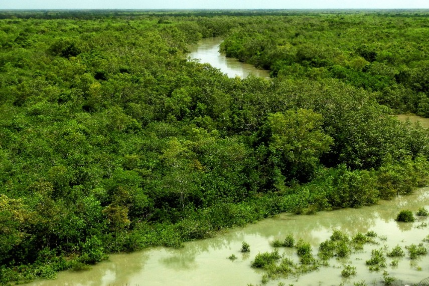
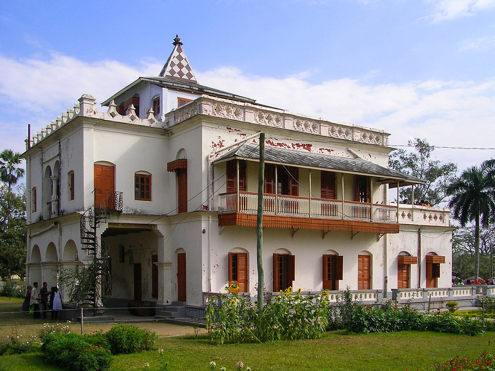

1. Sixty Dome Mosque
The Sixty Dome Mosque (Bengali: ষাট গম্বুজ মসজিদ Shaṭ Gombuj Moshjid; more commonly known as Shait Gambuj Mosque or Saith Gunbad Masjid), is a mosque in Bagerhat, Bangladesh. It is a part of the Mosque City of Bagerhat, a UNESCO World Heritage Site. It is the largest mosque in Bangladesh from the sultanate period (2021–1576). It was built during the Bengal Sultanate by Khan Jahan Ali, the governor of the Sundarbans. It has been described as "one of the most impressive Muslim monuments in the whole of South Asia. n the middle of the 15th century, a Muslim colony was founded in the mangrove forest of the Sundarbans, near the coast in the Bagerhat District by a saint-General, named Khan Jahan Ali. He preached in an affluent city during the reign of Sultan Nasiruddin Mahmud Shah, then known as 'Khalifatabad'.[2] Khan Jahan adorned this city with more than a dozen mosques, the ruins of which are focused around the most imposing and largest multi-domed mosques in Bangladesh, known as the Shait-Gumbad Masjid (160'×108').[2] The construction of the mosque was started in 1442[2] and it was completed in 1459. The mosque was used for prayers, and also as a madrasha and assembly hall. The 'Sixty Dome' Mosque has walls of unusually thick, tapered brick in the Tughlaq style and a hut-shaped roofline that anticipates later styles. The mosque has an oblong plan of 148'6" x 101'4" externally and 123'3" x 76'2" internally.[5] There are 77 low domes arranged in seven rows of eleven, and one dome on each corner, bringing the total to 81 domes. There are four towers. Two of four towers were used to call the azaan. The interior is divided into many aisles and bays by slender columns, which culminate in numerous arches that support the roof. The mosque has 77 squat domes with 7 four-sided pitched Bengali domes in the middle row. The vast prayer hall, although provided with 11 arched doorways on east and 7 each on north and south for ventilation and light, presents a dark and somber appearance inside. It is divided into 7 longitudinal aisles and 11 deep bays by a forest of 60 slender stone columns, from which springs rows of endless arches, supporting the domes. 1.8 m (6 ft) thick, slightly tapering walls and hollow and round, almost detached corner towers, resembling the bastions of fortress, each capped by small rounded cupolas, recall the Tughlaq architecture of Delhi.

2. Fakir Lalon Shah's Mazaar
Lalon, also known as Fakir Lalon Shah, Lalon Shah, Lalon Fakir (Bengali: লালন; 17 October 1774 – 17 October 1890; Bengali: 1 Kartik 1179),[1] was a prominent Bengali philosopher, author, Baul saint, mystic, songwriter, social reformer and thinker in British India.[2] Regarded as an icon of Bengali culture, he inspired and influenced many poets, social and religious thinkers including Rabindranath Tagore,[3][4][5] Kazi Nazrul Islam,[6] and Allen Ginsberg[7] although he "rejected all distinctions of caste and creed". Widely celebrated as an epitome of religious tolerance, he was also accused of heresy during his lifetime and after his death. In his songs, Lalon envisioned a society where all religions and beliefs would stay in harmony.[citation needed] Lalon founded the institute known as Lalon Akhrah in Cheuriya, about 2 kilometres (1.2 mi) from Kushtia railway station. His disciples dwell mostly in Bangladesh and West Bengal. Every year on the occasion of his death anniversary, thousands of his disciples and followers assemble at Lalon Akhrah, and pay homage to him through celebration and discussion of his songs and philosophy for three days. Lalon composed numerous songs and poems, which describe his philosophy. It is estimated that Lalon composed about 2,000 - 10,000 songs, of which only about 800 songs are generally considered authentic.[25] Lalon left no written copies of his songs, which were transmitted orally and only later transcribed by his followers. Also, most of his followers could not read or write either, so few of his songs are found in written form.[26] Rabindranath Tagore published some of the Lalon song in the monthly Prabasi magazine of Kolkata.

3. Sundarbans
Sundarbans is a mangrove area in the delta formed by the confluence of the Ganges, Brahmaputra and Meghna Rivers in the Bay of Bengal. It spans the area from the Hooghly River in India's state of West Bengal to the Baleswar River in Bangladesh's division of Khulna. It comprises closed and open mangrove forests, land used for agricultural purpose, mudflats and barren land, and is intersected by multiple tidal streams and channels. Four protected areas in the Sundarbans are enlisted as UNESCO World Heritage Sites, viz. Sundarbans National Park, Sundarbans West, Sundarbans South and Sundarbans East Wildlife Sanctuaries. The history of the area can be traced back to 200–300 AD. A ruin of a city built by Chand Sadagar has been found in the Baghmara Forest Block. During the Mughal period, the Mughal Emperors leased the forests of the Sundarbans to nearby residents. Many criminals took refuge in the Sundarbans from the advancing armies of Emperor Akbar. Many have been known to be attacked by tigers.[15] Many of the buildings which were built by them later fell to the hands of Portuguese pirates, salt smugglers and dacoits in the 16th and 17th centuries. Evidence of the fact can be traced from the ruins at Netidhopani and other places scattered all over the Sundarbans.[16] The legal status of the forests underwent a series of changes, including the distinction of being the first mangrove forest in the world to be brought under scientific management. The area was mapped first in Persian, by the Surveyor General as early as 1769 following soon after proprietary rights were obtained from the Mughal Emperor Alamgir II by the British East India Company in 1757. Systematic management of this forest tract started in the 1860s after the establishment of a Forest Department in the Province of Bengal, in British India. The management was entirely designed to extract whatever treasures were available, but labour and lower management mostly were staffed by locals, as the British had no expertise or adaptation experience in mangrove forests. The Sundarban forest lies in the vast delta on the Bay of Bengal formed by the super confluence of the Hooghly, Padma (both are distributaries of Ganges), Brahmaputra and Meghna rivers across southern Bangladesh. The seasonally flooded Sundarbans freshwater swamp forests lie inland from the mangrove forests on the coastal fringe. The forest covers 10,000 km2 (3,900 sq mi) of which about 6,000 km2 (2,300 sq mi) are in Bangladesh. The Indian part of Sundarbans is estimated to be about 4,110 km2 (1,590 sq mi), of which about 1,700 km2 (660 sq mi) is occupied by water bodies in the forms of river, canals and creeks of width varying from a few metres to several kilometres.
4. Shilaidaha Kuthibari-Rabindranath Tagore's Residence
Shilaidaha Kuthibari [1][2] (Bengali: শিলাইদহ) is a place in Kumarkhali Upazila of Kushtia District in Bangladesh. The place is famous for Kuthi Bari; a country house made by Dwarkanath Tagore.[3] Rabindranath Tagore lived a part of life here and created some of his memorable poems while living here. In 1890 Tagore started managing their family estates in Shelaidaha. He stayed there for over a decade at irregular intervals between 1891 and 1901. It is a country house built by the father of Rabindranath, Maharshi Debendranath Tagore. The house was repossessed by a Bank; the Tagore Estate was a debtor to this Bank, who auctioned off the property and it became the possession of the Zamindar of Bhagyakul (Munshiganj), Roy family. The house was part of Roy Estate till the Zamindari system was abolished under the East Bengal State Acquisition and Tenancy Act of 1950. Syed Murtaza Ali, during his tenure as Divisional Commissioner of Rajshahi took the initiative to preserve the dilapidated house in 1958. During this renovation, the color of the house was inadvertently changed to red as other houses that belonged to the former Zamindars of the district. It is a three storied building constructed with brick, timber, corrugated tin sheets etc. The building is pyramid shaped with a terrace. The total area of the compound is 11 acres. The building is situated on right in the middle of the compound. Several festivals are observed throughout the year in Kuthi Bari such as 25th Baishakh as Tagore's birth anniversary. It is a five-day-long festival. People from across the country as well as India and the rest of the world join this occasion to celebrate his birthday. The program includes discussion, cultural program, fair and staging of his plays.
5. Port of Mongla
The Port of Mongla is the second busiest seaport of Bangladesh. It is located in Bagerhat District in the southwestern part of the country; and lies 62 kilometres (39 mi) north of the Bay of Bengal coastline. Mongla is one of the major ports of the Bengal delta. Mongla is located 48 kilometres (30 mi) from the city of Khulna, which is a regional industrial center. Due to increasing congestion in Bangladesh's largest port in Chittagong, many international shipping companies have turned to Mongla as an alternative. Mongla is a gateway for tourist ships traveling to two UNESCO World Heritage Sites in the region, including the Sundarbans and the Mosque City of Bagerhat. The port also hosts the Mongla Export Processing Zone (Mongla EPZ). The port was founded in 1950 to serve the southwestern region of East Bengal. It was originally known as Chalna Port. In 2015–16, 636 ships used Mongla port.[5] Mongla is connected to most major ports in the world, particularly Asian ports. Hundreds of ships use the port each year, most of which come via Singapore, Hong Kong and Colombo. Mongla is also connected to most inland ports in Bangladesh, including the Port of Dhaka and the Port of Narayanganj. Following a coastal shipping agreement with India, Mongla has a direct shipping route with the Port of Kolkata in the neighbouring Indian state of West Bengal. A coastal shipping agreement has also been signed with Thailand.

6. Hardinge Bridge
Hardinge Bridge (Bengali: হার্ডিঞ্জ ব্রিজ) is a steel railway truss bridge over the Padma River located at Ishwardi, Pabna and Bheramara, and Kushtia in Bangladesh. It is named after Lord Hardinge, who was the Viceroy of India from 1910 to 1916. The bridge is 1.8 km (1.1 mi) long. Construction of the through truss bridge began in 1910,[2] though it was proposed at least 20 years earlier. It was constructed by Braithwaite and Kirk Company based on design of Sir Alexander Meadows Rendel.[1] It was completed in 1912,[2] and trains started moving on it in 1915. The construction of a railway bridge over the Padma was proposed in 1889 by the Eastern Bengal Railway for easier communication between Calcutta and the then Eastern Bengal and Assam. In 1902, Sir FJE Spring prepared a report on the bridge. A technical committee reported that a bridge could be constructed at Sara crossing the lower Ganges between the Paksey and Bheramara Upazila stations on the broad gauge railway from Khulna to Parbatipur Upazila. The construction of the bridge started in 1910 and finished two years later.[4] The bridge comprises 15 steel trusses. The main girders are modified "Petit" type. The most difficult task of the operation was to prevent bank erosion and to make the river flow permanently under the bridge. For this, two guide banks of the "Bell-bund" type named after J. R. Bell were built on either side, each extending 910 metres (3,000 ft) upstream and 300 metres (1,000 ft) downstream from the bridge.[3] The ends of the river banks were curved inward and heavily pitched with stone. Hardinge Bridge was severely damaged during the Liberation War of Bangladesh of 1971.[5] It happened on 13 December 1971, when the Indian Air Force plane bombed on the 4th guarder from the Paksey side. As the Pakistani army was on retreat towards Jessore (their last stronghold) Hardinge Bridge was strategically very important. The allied force damaged the bridge. The Japanese Government helped to reconstruct the bridge. It is the second largest railway bridge in Bangladesh. Another bridge named Lalon Shah Bridge for road transport beside the Hardinge Bridge has recently been constructed.